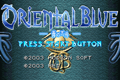
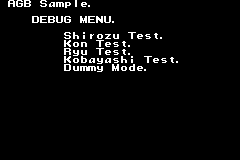
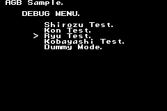

Oriental Blue - Ao no Tengai (Japan)
Stateless / Passcode Debug Menu Patch 📺 Joybus 💾 MultiBoot 🎮 4P Link
Cartridge Identity
- Game Code
AORJ(FamilyAOR)- Header Title
ORIENTALBLUE- Maker / Revision
01/ rev0- ROM Size
- 16.0 MiB (16,777,216 B)
- Save Media
None / Unknown- SHA-256
0e9997636409c47734895ea2180521fa7ad8898d7f45e01634c9e207039d7808- Engine / SDK Group
comm-001(196 families)
Screenshots

Debug Menu Re-Enablement Patch (.ips)
Download AORJ-debug.ips (42 B IPS / 14 B delta)
- Hook Mechanism
thumb_bl_redirect· Redirect boot thread BL at 0x08000b92 to FUN_08074fec (5-entry AGB Sample DEBUG MENU), NOP debug-text guard at 0x0807517e, and NOP AgbMain DISPCNT/PRAM overrides at 0x0807361a/0x08073626- IPS SHA-256
909133ac5471e8728a5a2e1d2440df59dcb28e6c2d4b3e3ac3b31a1df0246424
gbakit patch apply AORJ-debug.ips original.gba patched-debug.gba

Link Cable & Multiplayer Communications
This title contains detected communication capabilities: 📺 Joybus 💾 MultiBoot 🎮 4P Link.
Detailed protocol specifications, SIO registers, Joybus commands, and MultiBoot sequences are documented in the Link & Multiplayer Reference.
- Multi-Player SIO (4P)
- 16-bit ring network · SIOCNT (
0x04000128) literals:0x074a8c,0x074af4,0x074b20· SIODATA32/SIOMULTI0 (0x04000120) literals:0x074e6c,0x4da53c,0x4da6bc - GameCube Joybus
- Register literal
REG_JOYCNT(0x04000140) at offset0x298f00 - GameCube Joybus
- Register literal
REG_JOYCNT(0x04000140) at offset0x338d28 - GameCube Joybus
- Register literal
REG_JOY_RECV(0x04000150) at offset0x270b94 - GameCube Joybus
- Register literal
REG_JOY_RECV(0x04000150) at offset0x320028 - GameCube Joybus
- Register literal
REG_JOY_TRANS(0x04000154) at offset0x27cb2c - GameCube Joybus
- Register literal
REG_JOYSTAT(0x04000158) at offset0x27c1d4 - GameCube Joybus
- Register literal
REG_JOYSTAT(0x04000158) at offset0x2a04e4 - Single-Cart MultiBoot
- Single-Cartridge MultiBoot (Download Play) client/server handler · Thumb SWI 0x25 (
0xDF25):0x1a4e42,0x1a4f54,0x1ae096,0x2fdcba
Cartridge Storage Architecture: Stateless / Passcode
Zero non-volatile battery hardware: This cartridge PCB contains ROM only (no SRAM, Flash, or EEPROM chips). Progression is preserved via on-screen passcodes or session-only gameplay. No
.sav file is generated or required.
ROM Assets, Compression & Audio
- BIOS Compression
- LZ77 (
0x10): 32,644 streams · RLE (0x30): 0 streams - ROM Pointer Tables
- 93 tables (0 pointing to validated compressed streams)
- SDK Backup Tags
SRAM_V112
Asset Map (formatkit.asset-map.v1)
Download AORJ-r0-0e9997636409c477.asset-map.json.gz (283,376 B (276.7 KiB)) Verified PASS · 3.28% coverage
| Metric | Bytes / Value | Entries |
|---|---|---|
| Identified | 288,630 B (281.9 KiB) (1.72%) | 2,304 |
| Mapped | 0 B (0.00%) | 0 |
| Opaque | 262,155 B (256.0 KiB) (1.56%) | 1 |
| Unknown | 16,226,431 B (15.47 MiB) (96.72%) | 2,256 |
| Total ROM Size | 16,777,216 B (16.00 MiB) | 4,561 |
| Coverage % | 3.28% | — |
| Entries w/ Code Refs | 2,333 / 4,561 (51.15%) | — |
Top Identified Formats: gfx.gba-palette (2,206 · 216,032 B (211.0 KiB)) · compress.bios-huffman (1 · 42,994 B (42.0 KiB)) · compress.bios-lz77 (95 · 21,692 B (21.2 KiB)) · audio.m4a-song-table (1 · 7,720 B (7.5 KiB)) · gba.rom-header (1 · 192 B)
Largest unknown Extents (Headerless / Custom Asset Candidates)
| Offset | Size | Shannon Entropy | Code Refs |
|---|---|---|---|
0x001BC1F4 | 409,180 B (399.6 KiB) | 0.188 bits/B | 0 |
0x00F7CA20 | 275,925 B (269.5 KiB) | 0.280 bits/B | 0 |
0x000E1A20 | 192,736 B (188.2 KiB) | 7.486 bits/B | 0 |
0x002418D5 | 190,503 B (186.0 KiB) | 4.371 bits/B | 0 |
0x00EF3528 | 188,128 B (183.7 KiB) | 6.950 bits/B | 0 |
gzip -dk AORJ-r0-0e9997636409c477.asset-map.json.gz && gbakit map verify rom.gba AORJ-r0-0e9997636409c477.asset-map.json
gbakit assets export rom.gba --asset-map AORJ-r0-0e9997636409c477.asset-map.json -o out/Text, Fonts & Scene Data
- Primary Text Encoding
- Custom 16-bit Huffman (
14ASCII strings ·35Shift-JIS runs ·3LZ77 ASCII blocks) - Font & VWF Indicators
- VWF Width Table 1bpp Font · BIOS SWIs: BitUnPack
0x10:2· LZ770x11/12:12· Huffman0x13:1· RLE0x14/15:8 - Scene & Packaging
26ROM pointer tables (≥32 entries,2≥200) ·303relativeu32TOCs ·313OAM metasprite hits
Hardware MMIO Subsystems
ppu_display0x8075c38,0x8075ce0,0x807daf4